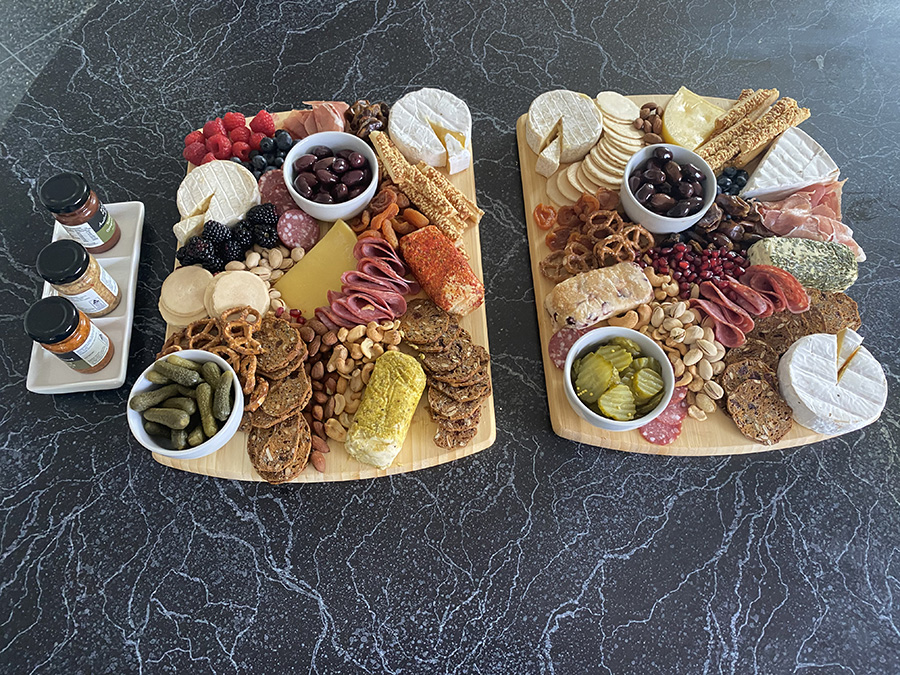

On my last page we went over a general cheese board and how to assemble one, on this page I will be going into futher details about serving suggestions and ideas for your ideal board.
Assembing your board:
Like I said on the previous page, having acess to your ingredients is the most important part of your board. Take out the time to find your ingredients. Drive around, or get your parents to drive you around and condisider your options. The key is two have different textures and flavours, food is a sensory experince. You want the board to smell good, look good and most importanly, taste good. Everyone likes their cheese differently, by introducing different flavours and textures you'll be able to cater to most. So below I have listed ingredient ideas for your board.
Sharp and firm:
Soft and creamy:
Once your board is assembled, you want to cover it and leave it in the fridge, removing beforehand to allow the cheese to come to room temperatue. Cheese is best when seved at room temperature. I personally prefer my olives and pickles served cold, so I would place those in their respective places before serving. The same goes to chocolate, melted chocolate will make a mess of the board so be wary of it. when serving your cheese, slice or crumble a bit of it so it looks ready to eat. Keep flavours that go together close to each other, this makes it easier for people to dig in.
So thats it! Theres the guide! Thank you for taking out the time to read my guide! For anyone who tried to make a board, you can reach me on gmail, at anisha182006@gmail.com to send me a pic.
To go back to page 1